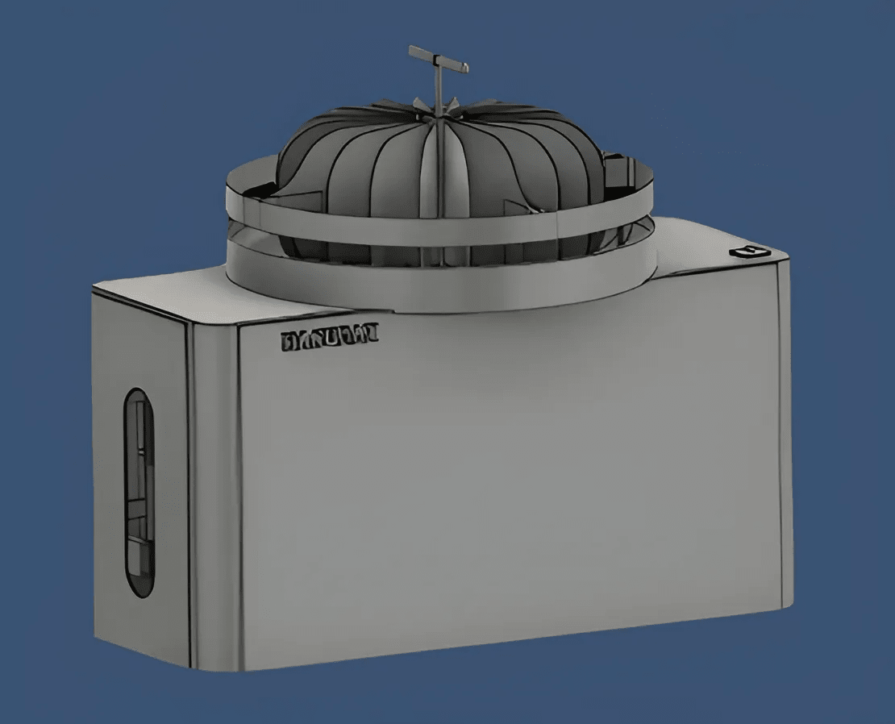
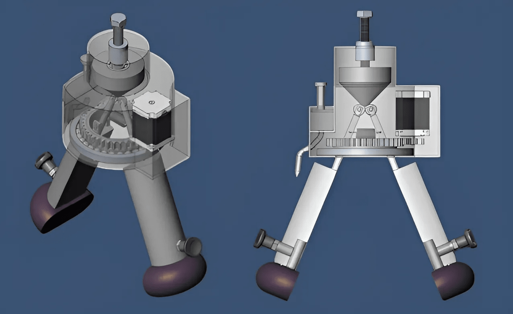

Flexible Laparoscopic
The articulated design ensures easy maneuverability within the body, enabling precise surgical movements without causing unnecessary trauma to surrounding tissues.
With a firm grip that securely holds needles and tissues, the device offers surgeons confidence in their dexterity, facilitating delicate procedures with accuracy and control.
A medical-grade polymer tube covers the joint, preventing contamination of internal components, while offering durability and longevity even in demanding surgical environments.
Automatic Dish Washer
Tailored for Indian cuisine, this dishwasher efficiently tackles oily residues, ensuring dishes emerge sparkling clean without the need for pre-soaking or excessive scrubbing.
Water Conservation
By incorporating a recycling mechanism, the device minimizes water consumption, making it an environmentally-friendly option compared to conventional dishwashers, which often use copious amounts of water for each cycle.
Continuous Cleaning Process
Unlike traditional dishwashers, which handle a limited number of dishes per cycle, this invention facilitates a continuous cleaning process, allowing dishes to move and slide continuously, maximizing cleaning efficiency and throughput.
Portable Semi-Automatic Utensil Cleaner
The unique mechanism allows for circular motion and adjustable jaw distance, facilitating efficient cleaning of various utensils by accommodating different shapes and sizes, ensuring thorough cleanliness with ease.
Specifically designed for the elderly and disabled, as well as economically disadvantaged individuals, this device offers an affordable alternative to expensive automatic dishwashers, empowering more people to access convenient kitchen cleaning solutions without financial strain.
The device's detachable cleaning jaws, coupled with adjustable distance settings, simplify the cleaning process for users of all abilities, offering a convenient and intuitive solution for maintaining kitchen hygiene with minimal effort.